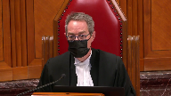
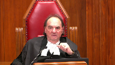
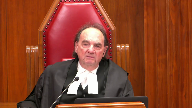

Her Majesty The Queen v. Kevin Eric Goforth
This transcript was made with automated artificial intelligence models and its accuracy has not been verified. Review the original webcast here.
Justice Wagner (00:00:25): Good morning.
Please be seated.
The case of Her Majesty the Queen against Kevin Eric Goffort.
For the appellant, Her Majesty the Queen, Puriata Brizzi Rirdigin.
For the respondent, Kevin Eric Goffort, Aleda M. Oberholtzer, and Zachary Carter.
Yes, Mr. Chee.
Speaker 1 (00:01:00): go ahead.
Thank you Mr. Chief Justice and may it please the court.
The respondent was a foster parent to two children ages three and four.
One starved to death and the other was found on the brink of starvation.
Their bodies were covered with wounds and sores.
The surviving child revived after just refeeding.
The majority below found the jury instructions to be inadequate.
They mischaracterized the case by reasoning as if the respondent were absent or did not have an opportunity to observe the children.
But the respondent lived in the same house as the children, was home every night and all day on Sundays.
They also defined the objective mens rea for the offense of failing to provide necessaries of life in a way that eroded the minimum level of care guaranteed to children under section 215 regardless of a parent’s work schedule and regardless of their personal beliefs about who raises the children.
The decision is contrary to this court’s jurisprudence on objective mens rea and has significant implications for the basic guarantees under section 215.
The decision should be overturned and the convictions restored.
I’m going to start by making a few comments about the objective mens rea.
The majority below as well as my friend looking at her outline of argument rely on Chief Justice Le Maire’s minority opinion in Naglick, particularly pages 142 to 143.
These passages call for a greater consideration of an accused’s personal factors and thought processes in relation to the objective mens rea.
Justice McLaughlin’s majority decision, she was joined by Justice Laura De Bay, the majority decision in Naglick explicitly rejected these passages.
The majority decision in Naglick as well as Creighton as well as every subsequent case from this court has recognized the importance of maintaining a single uniform legal standard of care for the objective mens rea offenses.
This is very important in the context of section 215 where the standard of care relates to providing baseline needs to children, food, fluids, and medical care when it’s needed.
The objective test is contextualized but it is not personalized.
It’s contextualized in that it applies the standard of reasonably prudent person engaged in the same activity in the specific circumstances that prevailed.
It is not personalized in that the reasonable person is not given or clothed in the accused’s personal characteristics unless they’re so extreme that they amount to an incapacity to appreciate or avoid the risk.
Justice Kasirer (00:04:16): Can I ask you if you’re alluding to, when you’re emphasizing the relevance of activity over personal characteristics, that you’re alluding to Javan-Mardi and a gloss maybe on Creighton or building upon Creighton.
And you do, in your factum you say quite nicely speaking about the relevance of the activity but not of the actor.
And I understand that.
I’m wondering if we look at Justice Caldwell’s descent, if that’s fully accounted for.
And I have in mind in particular paragraphs 118 and 122, where Justice Caldwell seems to build on the earlier, earlier allusion as that you’ve pointed out to Justice McLaughlin’s reasons in Creighton.
So I’m wondering if that activity sensitive dimension is present in Justice Caldwell’s opinion or if it needs to be, if Justice Caldwell’s opinion needs to be improved upon.
Speaker 1 (00:05:41): I think it is, and I’m looking at these paragraphs, Justice, I think it is, of course, the focus of Justice Caldwell’s decision was really talking about the personal characteristics not entering into the analysis, so I think that might be where the emphasis was put.
But yes, it is an important point that the distinction between personal characteristics and circumstances of the activity is very important, and it needs to be jealously guarded, because otherwise anything falling into one category could easily be characterized as the other.
And in the facts of this case, we would submit that the characteristics that the majority considered certainly fell into the personal characteristics category.
Justice Kasirer (00:06:41): But would you say that Justice Caldwell, when at 122, when it said the question is always what the reasonable parent would have done in the circumstances of the case, that that’s the right turn of phrase for being activity sensitive, and indeed 215 seems to sort of codify that for parents. And in.

Overlapping speakers (00:07:03): in which case.
Justice Kasirer (00:07:04): In which case you’d ask yourself, well, the reasonable parent, even if he absented himself six days a week between 6 a.m. and 6 p.m., would the reasonable parent have taken precautions or have known or as opposed to particularizing it around beliefs of the division of labour, the appropriate division of labour in marriage or some such thing?
Speaker 1 (00:07:36): Yes, if I understand the question correctly, yes, we are talking about the reasonable parent and that’s, I mean, this court in Javan-Mardin makes the point very clear that the activity is relevant and the activity of parenting is relevant and that’s why we distinguish some of the other hypotheticals that have been raised with regards to the welder, for instance, that’s come up.
It would be sensitive to a reasonable parent.
Now, I can go on, if you wish, and talk about some of the other hypotheticals that the majority raised with regards to parents leaving their children at daycare, if you wish, but to answer your question directly with regards to the reasonable parents, yes, that is what we are talking about.
Justice Kasirer (00:08:31): Thank you.
Speaker 1 (00:08:38): Thank you.
As I said, the test is contextualized and not personalized and we submit that the majority below committed a legal error by personalizing the objective test when they considered relevant factors that were personal to the respondent and entirely under his control.
This included the respondent’s work schedule, the claim that he was busy, the belief that his wife had things well in hand, his lifestyle and the belief that his wife was responsible for the children, particularly the girls.
None of these robbed him of the opportunity to observe and to observe the obvious that the children over a period of time were starving to death and they were covered with extremely painful injuries.
Now before I address these factors, I want to quickly touch on each of these factors.
It is important to keep in mind that the instructions placed all these factors in detail before the jury multiple times.
It’s just that the majority below thought these details needed a special emphasis in relation to the mens rea and that was the error of law because these subjective factors had no place in the objective analysis.
So with regards to the concern Justice Caldwell terms this interspousal agreements, with regards to interspousal agreements, the objective mens rea wasn’t concerned with how the respondent had decided to apportion duties in his household.
He had a duty to provide basic care independent of any agreements with his wife.
If this were not the case, a person could permanently negotiate or opt out of section 215 duties.
Section 215 does not distinguish between gender roles.
It does not create a taxonomy of primary or secondary caregivers.
Once the respondent was found to be captured by the provisions of 215, he was engaged in the activity of caring for children and he had a duty to provide for baseline needs.
In other words, he had the duty to observe and to take action.
The objective mens rea also doesn’t consider subjective knowledge.
Majority justices considered as relevant what the respondent knew in relation to the condition of the children.
As this court has said in Creighton, objective mens rea does not take into account a person’s subjective knowledge.
The fault is in the respondent’s failure to turn his mind and attention to the dangerous situation.
The question is what the reasonable person ought to have known, not what the accused knew.
Here the respondent, as I’ve said, went on for weeks based on the medical evidence, supposedly thinking that the children were just sick and they would get better, when in fact they were covered with injuries and starving under his roof.
The children’s critical condition was obvious to any doctor, to any nurse, to any officer who saw them.
The only question was what the respondent ought to have known if he were exercising the requisite care.
Justice Brown (00:12:18): you’ve got limited time and I just want to make sure that you reserve enough time to talk to us about the jury charge.
Speaker 1 (00:12:25): Absolutely.
I can get that there pretty quickly.
My next point, I’ll simply very…
Excuse me, maybe… maybe…
Justice Karakatsanis (00:12:37): just a quick question before you leave this area.
I’m looking at paragraph 118 of Justice Caldwell’s reasons and the sentence that says the standard of care is derived from the circumstances of the activity in question.
This is the question that the paragraph that Justice Casidere referred you to and not from the particular circumstances of the parent or caregiver.
The first sentence makes it clear that personal characteristics are irrelevant, but the second one does it go too far in saying that the circumstances of the parent is irrelevant?
I asked the question because in a circumstance where a parent is away and has made alternative arrangements, why wouldn’t those circumstances be relevant?
In the circumstances, I think means as the events unfold, how would a reasonable person react?
Would they see that whatever arrangements in place are not reasonable?
So I need your response on the accuracy of that question, of that sentence.
Speaker 1 (00:13:52): Absolutely, I’ll try my best.
In terms of the particular circumstances of the parent, I think that phrase, I think the problem is using that the word circumstances, because it gets us confused with the circumstances of the activity.
Or the events.
Justice Karakatsanis (00:14:14): as they unfold.
I mean, mistake of fact is also available.
So I guess I get it that, you know, the relationship with the spouse is not what we’re talking about here.
Justice Jamal (00:14:27): Mm-hmm.
Speaker 1 (00:14:27): Mm-hmm.
Perhaps I can talk about the specific situation that you asked about in terms of what about a parent who arranges particular, particular care, say daycare, and leaves the child at daycare.
What about that situation?
Well, Section 215 punishes a marked departure from a conduct of a reasonable parent in the circumstances where it’s objectively foreseeable that the failure to provide necessaries of life would lead to risk of danger.
It would be an extraordinary interpretation to say that a parent has failed to provide necessaries by arranging daycare.
This is not a breach of a parent’s duty.
It’s the opposite.
The parent is seeing that their child is temporarily cared for.
What’s not allowed is a parent in the long term negotiating out of those duties.
And even if we want to look at this in the context of foreseeability and mens rea, we have to look at the foreseeability.
Foreseeability isn’t vision cast into the horizon.
It’s foreseeability in the context of the dangerous conduct and leaving children at say day school isn’t dangerous conduct.
Ignoring children week after week when they’re starving is.
And yes, I mean, 215 specifically raises the defense of lawful excuse.
And I would think that if there is any situation that lawful excuse would apply, it would be a situation just like that, that a parent is leaving child temporarily with somebody else.
They’re not abdicating the duty.
So in my mind, those considerations, that’s where they come into play.
And that’s why we’ve distinguished the hypotheticals of the majority below, because most of them aren’t even talking about criminal activity.
I am going to, unless there are any questions on that portion of my submissions, go to the instructions on objective foreseeability.
And here I’ll be focusing on tab eight, pages 18 to 19 of our condensed material.
And principally page 19.
As this court noted in Javan Mahdi, the mens rea for manslaughter is objective foreseeability of bodily harm beyond trivial and transitory, coupled with the mens rea for the predicate offense.
In this case, the predicate offense was failing to provide necessaries.
And the mens rea associated with the predicate offense was objective foreseeability of risk of death or permanent endangerment to health.
So if we look at page 19, this is the main instruction that the judge gave with regards to the mens rea.
I note that the entire instruction occurs under the heading that is specifically about the predicate offense, endangering life or likely to cause health of JG to be endangered permanently.
In paragraph 266, the judge quickly mentions mark departure and objective foreseeability.
267 breaks them down into two separate questions and talks about objective foreseeability, again, of risk of danger to life.
That’s the mens rea for the predicate offense.
267B, we’ve got mark departure.
From 268 to 270, we have the judge talking about, referentially, she’s already covered this evidence, about the evidence that’s relevant to that question.
And then we get to paragraph 271, starting with the word further.
Further, the crown must establish beyond the reasonable doubt and the judge gives the mens rea for manslaughter in that paragraph.
And 272, the paragraph immediately next to it talks again referentially with regards to what evidence is relevant there.
Now, all this was according to law.
She was instructing the jury on the mens rea of manslaughter coupled with the mens rea of predicate offense.
The judge did not label these and she didn’t need to.
The jury only needed to be functionally equipped to decide the case.
Justice Brown (00:19:30): Well, and Justice Caldwell covers that off quite well in his dissent, but neither he nor you in these excerpts deal with what follows, beginning at paragraph 274 of the charge, where the crown turns not to the duty as a foster parent to provide necessaries of life, 215-1a, but 215-1c, the duty to provide necessaries of life to a person under charge who can’t withdraw himself from the charge.
And I’m wondering what your submission are is about those paragraphs, 274, I guess to 288, because I see that as an omission in Justice Caldwell’s reasons, unless we accept that that is covered by, unless we say that that is covered by, I think it’s around paragraphs 100, 304 of his reasons, where he gives more generic commentary about the adequacy of the charge.
Speaker 1 (00:20:47): Yes.
Thank you, Justice Brown.
I think what we have here, there was a lot of duplication.
This was a very complex charge.
We have a lot of duplication.
Overlapping speakers (00:20:59): Indeed and that’s part of the problem.
I had problems following it yes and which is which is say something
Speaker 1 (00:21:07): That is why we think the paragraphs that we talked about, which is the main portion of where the judge instructs on the mens rea are critical.
There are many points when she does it referentially and uses the same language she has done before and we see her doing that under that second duty under 215 where she’s talking about the external circumstances as well as the fault element for 215-2
and she uses the same language as she had done before.
So I think the jury would have understood that the main test came from the main section where the trial judge spoke about the mens rea and spoke about it very clearly.
So I do think it is covered by that section.
Justice Jamal (00:22:03): Isn’t the problem though, you’re referring back to 195, I presume, isn’t the problem in 195, not that it refers to the mens rea for manslaughter, but that it fails to mention the higher foreseeability standard for the predicate offense?
That’s completely absent in 195.
And then it’s the four questions that are posed at 198 exclude any reference to the higher mens rea for the predicate offense.
I grant that it is there in 266 and 267, but in terms of the fundamental framework that the jury is given, starting in 195 and then the questions, and then of course that omission is repeated in 278, 285, and then paragraph 18 of the second count.
So there are places here you can find the right instruction on the higher foreseeability standard, but there are many more places where it’s absent.
Speaker 1 (00:23:03): Yes Justice Jamal, so in paragraph 195, 193 to 195, the trial judge uses a formula that’s repeated over and over again and she speaks about the external circumstances and the fault element for 215 and this is at a very early stage, it’s an introductory section that’s expounded on in 266 to 273 and yes when she goes back and talks about the, when she refers to the mens rea, she doesn’t repeat the entire thing, she uses the formula that she used which is abbreviated in 195.
In terms of what the framework that the jury was given, it’s important that the issues of endangering life or likely to cause risk of endangerment to health, permanent injury to health, was the very heading that all these considerations was being considered under.
That’s what the judge highlighted, that’s why I highlighted that portion on top of page 19 in my condensed book because that’s how, that’s the framework, that’s where this discussion takes place and whenever this mens rea issue is talked about, it’s talked about as a further requirement and that’s what I think is important, that it is an additional requirement for us to say that the jury would have completely ignored the main section of the jury charge and just focused on 271 or those introductory passages would be to assume that the jury would have completely ignored the main portion of the mens rea instruction.
And the other point that I would would make is that, and this is a point that Justice Caldwell makes, is that these jury instructions needed to be assessed on the basis of the evidence.
The wrongful act here was not feeding small children for a prolonged period of time.
It would have been impossible for the jury to conclude a reasonable person would not have foreseen feeding small children over time would lead to non-trivial bodily harm but not permanent endangerment to health or risk of endangerment of life.
We’re dealing with basic lifeline needs of children, that’s food and fluids, so in terms of the jury going astray we don’t see that happening here.
Now the majority justices below respond to this argument by saying that what was known to be to the respondent was highly contentious in this case and the difference could have been important between these two levels of mens rea.
With respect that response is premised on a legal error.
In the context of objective mens rea, actual knowledge wasn’t relevant.
What mattered was what the respondent ought to have known and that response we also submit is not premised on the facts of this case.
Overlapping speakers (00:26:21): Yeah.
Speaker 1 (00:26:22): and not supported by the record.
For instance, sure, the respondent had testified that he claimed he didn’t know how much weight the children had lost because he hadn’t seen them without clothing, or he hadn’t seen injuries except bruises because they were bandaged up.
But this case was about extreme starvation and wounds that would have left these children in utter agony.
And we have his testimony, for instance, I’ve highlighted some of these in our condensed book, I’ll simply rush through them looking at the time, that he had also testified that down to the last week, he had noticed the children’s eating habits.
Overlapping speakers (00:27:08): and that’s just fun.
Speaker 1 (00:27:10): Two days before the children were taken to the hospital, he had seen how J.G. was eating.
Sorry, Justice Marden, I see you might have a question.
Justice Martin (00:27:21): I’d like to interrupt you here because your time is limited and I’d like an answer to the question of, I mean, I understand that you’re arguing that the instructions were functionally adequate and but are you relying on the proviso as well?
I mean, in paragraph 146 of your factum, you say the jury instructions were not perfect but no substantial wrong or miscarriage of justice flowed from the imperfections.
And I’m a bit confused as to what the Crown’s position is on the proviso.
Speaker 1 (00:27:54): Yes, we are relying on the proviso, Justice Mark.
Justice Brown (00:27:57): And yet at the Court of Appeal you conceded that if the judge’s instructions regarding mens rea or available defences were inadequate the appropriate remedy would be to order a new trial.
Can Her Majesty really fairly take two conflicting positions at different levels of court on this?
Speaker 1 (00:28:19): um justice brown it context is is important here
and i’m going to do my best in in in the time remaining to answer that question yes in paragraph 245 the majority below quote a sentence from a fact and that we had filed below and interprets it as a concession it’s important to understand that when that factum was filed the main issues that decided this case with regards to the two layering of mens rea were unknown to the litigants as justice caldwell mentions in paragraph 83 of his uh decision the factum was written in response to general questions the court has put had posed to council regarding instructions on mens rea and related issues and asked for a remedy that’s what the that was the answer we were giving to the court parties responded in writing we didn’t see any errors and the we said the remedy for any inadequate instruction was a new trial the court understood that the risk that the parties hadn’t understood what it was what was bothering the court and the court reached out to council again with this specific question with regards to this juxtaposition of mens rea uh justice caldwell talks about this in paragraph 94 of his factum and those concerns were only raised in the context of oral arguments and in the oral arguments my submissions were this was a long ago but my submissions were yes i did not explicitly plead the proviso but what i did do was that i answered the court by saying the mens rea uh uh for manslaughter was not the the wrong mens rea because that offense was involved here
and i went a step further in terms of how the jury would have interpreted this
and i raised the argument about the further um uh the way this is phrased and layered and what the jury would have understood i submit that those submissions would have put the proviso at play now um yes it in most circumstances the crown has to plead uh the proviso to rely on it
but it’s important to understand that in this case we were responding to oral arguments and not to the respondent the respondent wasn’t even arguing fully these issues at the hearing
and i think it would be unfair if the court raised an issue but then precluded us from certain avenues i don’t see the court of appeal doing that here uh they’re uh interpreting our submission as a consent concession and um with respect i think that was not a concession because the problems were not known to us at that point thank you very much
Justice Wagner (00:31:14): Your time is up, but I have one last question for you.
Assuming that this court would allow the appeal, am I to understand that we would then need to return the file to the Court of Appeal for the sentencing issue?
Speaker 1 (00:31:30): I believe so because the majority justices didn’t consider the issue of sentence.
Thank you.
Justice Wagner (00:31:37): Now, I forgot to mention that there is a publication ban in this file pursuant to Section 486.4.2.2 of the Criminal Code.
Now we’ll go to Ms. Oberholzer.
Speaker 2 (00:31:55): Good morning Chief Justice and justices.
I’ll start by saying that this is my first time appearing as primary counsel before this court and I just want to say what a privilege it is to appear before this court.
I am here with my co counsel, Zachary Carter, who’s been assisting me.
I’d like to start off by acknowledging that the photographs and forensic findings in this case are horrifying.
One can imagine that whenever a charge is laid under Section 215 of the Criminal Code, the case will be disturbing, but it’s for this reason that it’s so important that jury instructions are consistent with established legal principles to avoid emotional responses and verdicts that are consistent with punishing morally and legally blameworthy people.
This court has the opportunity to decide on two important principles that will have long standing effects on justice going beyond Kevin Goldforth and the facts of this case.
This court has the opportunity to clarify what circumstances can be considered in the objective mens rea analysis, and what standard jury instructions should be held to.
I’ll be outlining why the majority at the Court of Appeal was correct that an individual’s contextual or situational circumstances are not personal circumstances when assessing the mens rea on an objective standard.
And then I’ll outline why the majority at the Court of Appeal was correct that although in jury instructions don’t need to be perfect.
It does not lower them to such a low standard that there could be a very real possibility that the jury misunderstood essential elements and facts that could be applied, leading to an easier conviction.
I’ll conclude by asking this court today to dismiss the Crown Appeal and uphold the decision of the majority at the Court of Appeal.
I’ll dive right in then to the objective mens rea standard.
What the appellant is currently asking for could have the impact of imposing an almost strict liability standard on the objective mens rea analysis.
What we’re asking this court to clarify the test in a manner that’s consistent with punishing morally blameworthy people.
The test for mens rea for section 215 was outlined in neglect.
It’s essentially a two step test the Crown must prove firstly beyond a reasonable doubt that it was objectively foreseeable in the circumstances that a failure to perform a duty would result in the death of the accused.
The test for mens rea for section 215 was a two step test.
Justice Brown (00:35:23): you can help me with this aspect of the Court of Appeals decision, Ms. Oberholzer.
The majority says at paragraph 156 that while Mr., while Ms. Goforth had what the Court of Appeal called direct responsibility, that’s the phrase I’d like to ask you about, for the day-to-day care of the children, Mr. Goforth did not.
What do you think the Court of Appeal meant by direct responsibility and I guess the question is to whom was that responsibility owed?
Speaker 2 (00:36:08): Thank you for that question, Justice.
So what I think the court was getting at the majority at that paragraph was that because of their different levels of connection to these children and how she was, Tammy was seeing the children every single day and had direct responsibility when we’re looking at the activity that was in question here, the Mr. Goldforth was distanced from it.
So their foreseeability would be completely different.
And I think that’s what they’re getting at because we are analyzing the foreseeability of two different people.
So when we’re looking at Ms. Goldforth, her contact was daily, all day, and Mr. Goldforth, he had minimal contact due to the parenting arrangement, due to the activity in question, and since this is an activity sensitive approach, his foreseeability would have been on a completely different analysis.
Justice Brown (00:37:17): So you are suggesting that activity-specific is really quite granular, it seems to me, and maybe that’s right, maybe it’s not.
It’s not like he was deployed to Afghanistan, it wasn’t like he was working up in Fort McMurray for weeks at a time.
He was still coming home at the end of the day.
This is not an unusual sort of family arrangement, is it, where one person stays home with young children and one person goes out for 8, 10, 12 hours a day.
Is there in the evening?
Is there on Sundays?
Could have observed these children getting thinner, having visible injuries.
I’m wondering, in light of that, whether activity-specific is being treated in too granular a fashion by your submissions, that he still has a responsibility, if not to Ms. Goforth, I mean, he’s worked out an arrangement with her that makes sense for each of them, presumably, but he still owes a responsibility to the children themselves and to the state in whose care was entrusted to him as well as her.
Speaker 2 (00:38:43): That’s correct.
Thank you, Justice.
What I would respectfully suggest is that is the analysis and whether or not this arrangement and Mr. Goldforth’s position in this contextual scenario, whether or not it was criminally irresponsible to a criminal standard was a fact for the jury to find.
But I agree with you, Justice, that that is the analysis that the jury should have embarked on is whether or not it was irresponsible or negligent to a criminal standard of Mr. Goldforth.
What was available to him at the time was something that the jury needed to decide, whether or not he had such a limited role and such a limited ability to foresee what was happening with the hour every day during the week at the supper table and then on the evening on Sunday, whether or not he was in a position to foresee what was happening to his children was a fact for the jury to find.
If that answers your question, I’ll maybe continue.
Overlapping speakers (00:40:08): Well, it’s an answer.
Thank you, Ms. O’Rourke.
Speaker 2 (00:40:10): Thanks.
I would respectfully submit that we agree with the majority at the Court of Appeal again and respectfully suggest that the situational contextual circumstances should be considered and since personal circumstances cannot be considered.
What other circumstances are there?
We’re suggesting that contextual circumstances was the court’s intent in numerous cases outlining what factors should be considered in an objective mens rea analysis.
So for example in BD the court outlined that there will be circumstances where a reasonable person in the position of the accused could have would not have been aware of the risk.
In the Glick, the court outlined that the question is whether the accused was capable of recognizing it fallen short of the standard of care required in the circumstances.
And Steven the court outlined that circumstances which presented themselves to the accused affect the determination of what or what or what is not foreseeable.
And in Java and Marty, the court discusses the standard is informed by the activity characteristics.
So here we’re suggesting the activity is the parenting arrangements.
The characteristics which should not be considered would be Mr. Goldfors belief of traditional family roles.
So there is that internal characteristics and the external circumstances.
The majority of the Court of Appeal here correctly clarified that the ability of a person charged with duties under Section 215 to foresee risk and the resulting duty to act in a prudent matter depends on the relevant circumstances that should have generated the foresight.
As pointed out in neglect conduct cannot be assessed in the abstract, and as illustrated by the majority of the Court of Appeal here, requiring foreseeability of risks avoids imposing an absolute liability.
The appellant has outlined that these what I’m referring to a situational circumstances are individual excusing conditions and points to various cases.
We’d respectfully point out that passages that the appellant relies on outlines that circumstances that deprive someone of the capacity to appreciate risk should be considered.
We would respectfully suggest that contextual or situational circumstances has the ability to put an accused in a position where their ability to appreciate risk needs to be assessed.
We’re respectfully suggesting the appellant paints the context of parenting arrangements as a personal subjective assessment and again, relying on Creighton for that, which outlines that provided the person has the capacity to appreciate the risk then lack of education or mental disabilities or personal characteristics they don’t serve as an excuse but the person still needs to be able to have that capacity be in a capacity to foresee risk.
Thank you.
Justice Kasirer (00:43:12): Ms. Oberholzer, even if you take your argument at its highest, that circumstances are relevant to the, the accused circumstances are relevant to the modified objective test, in Creighton, in JF, which is a parenting case.

And in Javan Marty, which confirms JF and confirms Creighton on this activity sensitive point.
It remains the reasonable parent in the circumstances of the accused.
And to get back to it, the facts here, the circumstances of the accused had him back at the dinner table every night of the week.
Had him at home every Sunday, even taking your argument at the highest.
How can you say that the reasonable parent in those circumstances wouldn’t have taken precautions or taken action to attend to the misfortunes of those children?
Speaker 2 (00:44:18): Thanks to that question, Justice.
That is the analysis.
And that was a fact for the jury that they needed to find.
So they needed to consider things like what Miss Goldforth was telling Mr. Goldforth, what he was seeing when he was sitting at the dinner table, whether or not he was seeing food at the dinner table when he was there for that hour.
They needed to be able to make that fact finding analysis.
They needed to find that as a fact.
And I would agree that maybe I don’t agree with, based on these facts, how the outcome would have been.
But that was for the jury to decide.
And they didn’t have the tools to make that assessment.
And I’ll get into that with the instructions.
But the test certainly should take those contextual circumstances into consideration as you.
Justice Karakatsanis (00:45:18): So I’m sorry, the jury did make findings of fact.
They made, they listened to the evidence, they listened to his evidence, and with respect to the verdicts, they did not find it raised a reasonable doubt.
You have to relate the findings of fact to an error in the jury charge that you say could have affected, reasonably have affected that finding of fact.
So I think you need to go to the specific error in the jury charge that you think would undermine the findings of fact that they clearly made.
Speaker 2 (00:45:57): When I get into the errors in the jury charge, there’s so many, but I will point out that here the foreseeability was really what was at issue.
And the foreseeability analysis was not outlined in an appropriate manner with the correct mens rea standard to the jury.
And then the evidence relating to Mr. Goldforth’s foreseeability in a contextual analysis was not outlined in an appropriate way for them to understand the test.
So I think we’re dealing with two different issues, or I would submit we’re dealing with two different issues.
Firstly, whether or not a parenting arrangement should be considered as a contextual circumstance that can be considered in the mens rea analysis.
And then whether or not here the jury was properly instructed.
I think going forward, even disregarding the facts of this case going forward, parenting arrangements should be considered as a contextual factor that should be analyzed when determining the objective mens rea analysis on the foreseeability branch and on the marked departure branch.
But right here we are discussing foreseeability specifically to take away the contextual circumstance completely, to take away parenting arrangements completely would have, I think long standing effects that would go against the principles of justice.
In this case specifically, I’ll move on maybe to the instructions now.
This court has the opportunity to clarify what standard we should hold judges charges to.
I believe the appellant is outlining, his argument is based on the evidence presented at the trial and the jury charge as a whole and stating that the numerous errors and the repeating errors and the manner in which the evidence was outlined can be overlooked because there are some portions of the charge that the jury might’ve made the right decision based on those portions.
We agree with the majority below that there was simply too many errors resulting in a very real risk that the jury could have misunderstood essential elements and which facts to apply to those elements.
Be standard.
Justice Côté (00:48:22): Ms. Oberholzer, you say that there are so multitude of errors in these instructions to the jury.
Did the defense at any time raise some of them at least?
Before the trial judge.
The errors?
Yeah, you say that there are so many errors with these instructions.
Did the defense do anything before the trial judge to raise at least some of those so-called errors?
Speaker 2 (00:48:54): My read of the transcript, Justice, is that there was maybe some back and forth on what the charge should outline, but the error specifically on the mens rea analysis was not brought up by any party.
And as the Court of Appeal outlined, it’s clearly incorrect.
It’s an incorrect standard.
So I don’t think any party had brought up that concern or that issue.
And in fact, the appellants didn’t bring it up either.
The Court of Appeal noticed it.
Justice Jamal (00:49:41): even accepting that the errors that you’ve pointed to are disclosed and that these are matters for the jury, why is this not an overwhelming case for the application of the proviso?
Speaker 2 (00:49:55): Right on the proviso, I think what I would respectfully submit on that portion is that here there was factual determinations that the jury had to make and then there is there is this concern that there might be overwhelming evidence but we don’t know what that if the jury found that overwhelming evidence and what they found and what they’ve applied to the to an incorrect standard that that we would respectfully suggest was outlined to them a lower less stringent standard was outlined to them and which would lead to an easier conviction here and so when with comments to the proviso I would respectfully suggest although I wasn’t although I wasn’t prepared for it because I did take note of what the court of appeal said and thought that the crown was not relying on it when there is an error in an essential element specifically when there is an error in the mens rea essential element of the offense one that leads to a lower less stringent test and leads to an easier conviction I would respectfully submit that the proviso cannot be relied upon and in the interest of justice there needs to be another trial held on the right standard
Justice Brown (00:51:17): So that’s quite a powerful answer.
That’s probably the best answer that I think can be given on that point.
So let me give you my response just so you understand where I’m thinking and you can to signal to you and you can address it or not.
Where, as in the facts of this case, the unlawful act is said to be the starving of a young child to death.
How could the jury possibly find that that does not meet even the more rigorous mens rea standard that should have been put more directly to the jury.
Speaker 2 (00:51:57): I think that here it’s because of that awful evidence that you’ve clarified, Justice, that it was so prudent and so important that these instructions were clear to them so that they could understand what they needed to assess here, and not just rely on the emotional response.
Justice Brown (00:52:24): this to you as an emotional response
and I’m not suggesting the jury was responding emotionally.
I mean obviously this is a difficult case, probably the most difficult that I’ve seen here, but looking at it from sort of cold, hard detachment, the starving of a child for a prolonged period of time, which it would take to kill the child, strikes me as something that could easily, I mean it must have been foreseeable to the more rigorous standard that should have on your theory and I tend to agree but make clearer to the jury.
Speaker 2 (00:53:07): Thanks.
So I think what what’s clear here is that the jury with their two different verdicts did not see Kevin as starving these children.
And I think there are some facts here that the jury would have considered that maybe on the foreseeability standard Kevin was not in a position to foresee what was happening.
Maybe that’s why he got manslaughter as opposed to…
Justice Moldaver (00:53:34): to murder.

So really the jury by its verdict is showing that it was quite discerning, having been told numerous times in this trial that his position was he wasn’t home way most of the day.
He left the care of the children to the spouse and so on.
Quite frankly, on the evidence that I see, the expert evidence and evidence of any objective observers who saw the children, I mean, they were like skeletons.
They were emaciated.
How he could have missed this if he didn’t actually know they were being starved?
He was willfully blind to it.
So it seems to me that he got a pretty good break from this jury to get manslaughter in this case.
And I can only think that he got manslaughter because of the very thing you’re suggesting, that he didn’t have, quotes, the primary care.
Speaker 2 (00:54:33): Thank you Justice and I think that if the the test was outlined appropriately to the jury that there there is a possibility that they might might still have convicted but we don’t know and there’s a very real possibility and especially based on their their separate convictions here they’re separate verdicts that there is a possibility that should the test have been outlined appropriately appropriately to them that they would have acquitted Mr.
Overlapping speakers (00:55:06): for us.
Justice Karakatsanis (00:55:07): because of his foreseeability.
Right, so let me ask you that, because that’s what the majority says here at paragraph 230, that there’s a reasonable possibility that the jury could have found mens rea for the lesser standard of manslaughter, but not for the higher standard of the predicate offense.
That somehow the jury could reasonably have concluded that he foresaw more than trivial harm, but did not foresee the risk of death or permanent health impairment.
Was it truly a reasonable possibility on the facts and evidence of this case, or is that just purely hypothetical?
And the question is really based on the same kinds of circumstances that have been pointed out by my colleagues.
If you accept that there was evidence that would support the other verdicts in this case, is it really, is there any kind of, to kind of mix from another area, is there any air of reality?
Is there really a reasonable possibility that the jury would have come to a, would have found that it met the mens rea for manslaughter, but not for the predicate offenses?
So that’s the question.
Speaker 2 (00:56:29): question. Thanks.
Thanks, Justice.
So on that question, firstly, whether or not it’s a possibility, I think if there’s a real possibility that that the jury could have been confused, I think in the principles of justice, regardless of how overwhelming a case is on what we’re looking at as facts, we’re not sure what the jury found as facts.
But if there is truly this possibility that that the jury misunderstood, which I would respectfully submit that these instructions since since legal counsel and people that are versed in the law are confused with, that a jury could have been confused.
And then we’re embarking on this speculation about what the jury considered as evidence and whether or not it was so overwhelming.
Whether or not a case is overwhelming should not mean that a trial justice’s charge should just be convoluted and confusing.
We should not allow trial justices to diminish the quality of their charge just because a case might look overwhelming to us.
We are not the trier of fact.
The charge should have been outlined clearly.
And here the charge was not outlined clearly and we are now speculating whether or not the jury could have ever acquitted or not based on how confusing the charge was.
And that doesn’t matter how overwhelming.
Justice Moldaver (00:58:02): Doesn’t it matter?

Isn’t that exactly what the second branch of the proviso is meant to do?
The case is so overwhelming, why would we possibly, why would we send it back into a justice system that’s already burdened?
That the second branch of the proviso says, assuming there’d been a perfect charge, the evidence here is so overwhelming that the verdict would necessarily have been the same.
That’s what we’re, I think, putting to you, Ms. Overlander. Sorry.
Speaker 2 (00:58:33): Thanks okay
so I think in this case
and I’ll respectfully submit that the evidence was not to that extent if there was a perfect charge the jury could have considered things in in Mr. Goldforth’s position about his foreseeability so Mr. Goldforth sees the children for one hour a day every night at suppertime at the dinner table he testified that he saw food and he saw them eating he relied on Tammy who indicated that they were sick but she often nursed them back to health he testified that they were sickly in the nine months that they were in his care.
Justice Brown (00:59:13): If we don’t accept your submission on that point, and if all you’ve got is the, I’ll call it a bit of a jumble on the mens rea, between the manslaughter standard and the predicate offence standard, what’s your submission then?
Speaker 2 (00:59:38): The errors in the trial judge’s instructions were not just with intermingling of the two mens rea standards.
She also failed to clarify when she was going from mens rea to actus reas.
She also did not clarify what a marked departure means.
So she also was unclear on the second branch of the mens rea analysis.
And then when outlining evidence, she would overlook really important evidence during core principles that needed to be explained.
So it’s not just the intermingling of the two mens rea.
Her entirety of her charge was very confusing.
And so I would respectfully submit that there were so many places where a jury could have erred here that we don’t know what facts they applied to what principles.
And this is, we need to hold trial judges to a higher standard.
And that’s really the conclusion of my analysis.
I was not very much prepared on this proviso because my understanding was that the Crown was not relying on the proviso and had acknowledged that if there was a misunderstanding on an essential element of the offense here, we don’t know what the jury would have, what the outcome would have been.
And there was a very real possibility that they misunderstood their role as a jury and misunderstood the law or the facts that needed to be applied to that law.
Justice Wagner (01:01:25): Thank you very much.
Any reply, Mr. Rydigan?
Speaker 1 (01:01:32): Yes, Mr. Chief Justice.
I’ll start with my friend’s last point in terms of the proviso.
We said specifically in paragraph 146 of our factum that the instructions were not perfect, but no substantial wrong or miscarriage of justice flowed from them.
My friend points to various indicia of imperfection in the jury instructions, like lack of transitions and so forth.
That’s holding the jury charged to a standard of perfection that was not required of it.
With regards to marked departure that my friend mentioned, the trial judge had a duty to reduce the issues to what really mattered.
And marked departure was never an issue in this trial.
No one has been able to show what definition of marked departure should have been put to the jury and what difference that would have made.
The trial counsel was certainly fine with the jury instructions and didn’t ask for anything more.
The prolonged failure to provide the children food, fluids, and medical care was a marked departure, as Justice Caldwell said, on any measure.
My friend submitted that parenting arrangements should be considered as part of mens rea.
Otherwise, they would lead to injustice.
Section 215 places the duty on every person who’s captured by that provision to provide a minimum level of care to children.
This section serves a policy end.
And this case is a great example of the wisdom in how that section is drafted.
In this case, the mother was found to have had the intent to kill.
She was found guilty of murder.
It was the respondent’s job to observe and recognize the gap and provide care when his partner wasn’t doing so.
Those are all my submissions.
Thank you.
Thank you very much.
Justice Wagner (01:03:42): So I would like to ask Council to remain at our disposal.
Speaker 1 (01:04:39): The court, the coup!
Justice Wagner (01:05:02): Thank you.
Please be seated.
I’d like to thank Council for their submissions.
The Court is ready to release its decision.
We are all of the view to allow the appeal, restore the convictions in order the case to be remitted to the Court of Appeal for consideration of the sentencing appeal, reasons to follow.
Thank you.